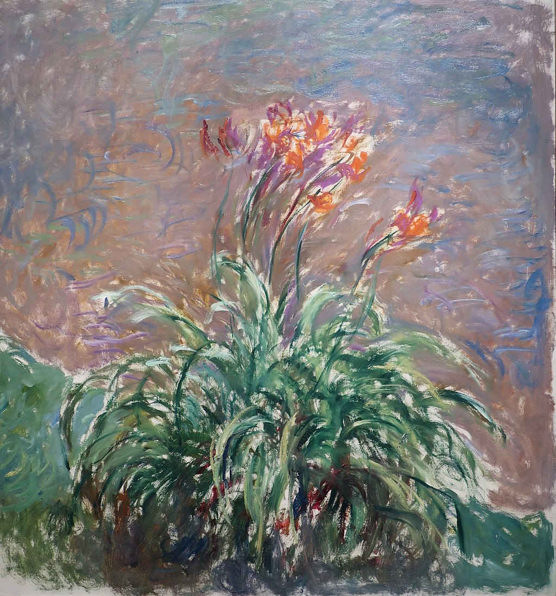

<head>
<meta charset="UTF-8" />
<meta name="keywords" content="drawing, painting" />
<meta name="description" content="drawings by Sunjy" />
<title>Sunjy</title>
<link rel="shortcut icon" type="image/x-icon" href="../../mImages/mCommon/favicon.ico" media="screen" />
<link rel="stylesheet" type="text/css" href="../../mCsses/mCommon/mCssA.css" />
<link rel="stylesheet" type="text/css" href="../../mCsses/mCommon/mCssB.css" />
<link rel="stylesheet" type="text/css" href="../../mCsses/mCommon/mCssC.css" />
<link rel="stylesheet" type="text/css" href="../../mCsses/mCommon/mCssD.css" />
<link rel="stylesheet" type="text/css" href="../../mCsses/mContent/mCssA.css" />
<link rel="stylesheet" type="text/css" href="../../mCsses/mContent/mCssB.css" />
<link rel="stylesheet" type="text/css" href="../../mCsses/mContent/mCssC.css" />
<link rel="stylesheet" type="text/css" href="../../mCsses/mContent/mCssD.css" />
</head>
<script type="text/javascript" src="../../mScripts/mContent/mContentAA.js" /></script>
<script type="text/javascript" src="../../mScripts/mContent/mContentAB.js" /></script>
<script type="text/javascript" src="../../mScripts/mContent/mContentAC.js" /></script>
<script type="text/javascript" src="../../mScripts/mContent/mContentAD.js" /></script>
<script type="text/javascript"></script> 
<script type="text/javascript">
document.write('<div class="mImgAbsolute"></div>');
/*
document.write('<p class="mFontSizeBColor" />From a white paper...</p>');
document.write('<table class="center"><tr><td>');
document.write('');
document.write('</td></tr></table>');
*/
</script>


<script type="text/javascript">
document.write('<p class="mFontSizeBColor" />Day Lilies </p>');
document.write('<p class="mFontSizeSColor" />Day Lilies by Claude Monet represent a range of Lilium plants, which is a herbaceous flowering plant growing from bulbs, all with large prominent flowers. Lilies are important in culture and literature in much of the world.<br><br>In the English Victorian Symbolism, lilies portray love, ardor, and affection for loved ones, while orange lilies stand for happiness, and love.<br><br>Lilies are the flowers most commonly used at funerals, where they symbolically signify that the soul of the deceased has been restored to the state of innocence.<br><br>Lilium longiflorum, the Easter lily, is a symbol of Easter, and Lilium candidum, the Madonna lily, carries a great deal of symbolic value in many cultures.<br></p>');
document.write('<table class="center" /><tr><td>');
document.write('<br>In the English Victorian Symbolism, lilies portray love, ardor, and affection for loved ones, while orange lilies stand for happiness, and love.<br><br>Lilies are the flowers most commonly used at funerals, where they symbolically signify that the soul of the deceased has been restored to the state of innocence.<br><br>Lilium longiflorum, the Easter lily, is a symbol of Easter, and Lilium candidum, the Madonna lily, carries a great deal of symbolic value in many cultures.<br>" />');
document.write('</td></tr></table>');
</script>


